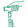

Artykuł sponsorowany
(I dlaczego Ty też powinieneś to zrobić — zanim będzie za późno)
 Autor: Stacy Miller
Ostatnia aktualizacja:
Autor: Stacy Miller
Ostatnia aktualizacja:

Ale pewnego ranka odebrałam telefon, którego – mam nadzieję – Ty nigdy nie otrzymasz. Mój tata był zdenerwowany i ledwo mogłam zrozumieć, co mówi.
Pojawiłam się na miejscu błyskawicznie, tylko po to, by zastać mamę zwijającą się z bólu na podłodze. Nie była w stanie się podnieść.
Tata znalazł ją leżącą w korytarzu. Próbowała wstać w nocy, żeby skorzystać z toalety, a jej laska — ta, o której wszyscy myśleliśmy, że jest "w porządku" — złożyła się pod jej ciężarem.
Miała stłuczoną kość biodrową. Skręcony nadgarstek. A co najgorsze, jej pewność siebie została zrujnowana.
Następnego dnia odmówiła wstania z łóżka. Przestała chcieć wychodzić na spacery. Ten jeden upadek wstrząsnął nie tylko jej ciałem — zachwiał jej niezależnością.
Ponieważ ten upadek mógł być śmiertelny.
Ona ma 87 lat. I po tamtym dniu poznałam bolesną prawdę:
Każdego roku w Stanach Zjednoczonych upada ponad 36 milionów seniorów. A ponad 32 000 z tych upadków kończy się śmiercią.

Tu nie chodzi tylko o siniaka czy strach.
Chodzi o to, co dzieje się później.
Jeden upadek często prowadzi do operacji, unieruchomienia, konieczności stałej opieki — a nawet śmierci. A w wielu przypadkach przyczyna jest ta sama:
Laska, której używała moja mama, "wyglądała dobrze"... ale była licha.
Składała się zbyt łatwo. Była niewygodna w trzymaniu. Ciężka w niewłaściwych miejscach i niestabilna u podstawy.
Nie oświetlała jej drogi. Nie pomagała jej wstać. Nie stała samodzielnie. Była bardziej modnym dodatkiem niż sprzętem medycznym. A jednak... na takich właśnie laskach polegają miliony ludzi każdego dnia.
Liche składane kijki z apteki. Przecenione "modne" laski bez wsparcia ergonomicznego. Wyglądające medycznie potworki, które krzyczą "słabość". Nic dziwnego, że tak wiele starszych osób przestaje w ogóle wychodzić z domu. Czują się niestabilnie, zawstydzeni i przestraszeni.
Ale nie zamierzałam pozwolić, by tak wyglądała historia mojej mamy.

W panice zadzwoniłam do mojej bliskiej przyjaciółki Natalie. Jest licencjonowaną fizjoterapeutką i jedną z najmądrzejszych, najbardziej współczujących osób, jakie znam. Potrzebowałam rady — natychmiast.
Kiedy opowiedziałam jej, co się stało, od razu powiedziała: "Musisz jej kupić Inteligentną Laskę Polorva."
Powiedziała mi, że to jedyna laska, którą poleca swoim pacjentom po operacjach i starzejącym się klientom.
To więcej niż laska. To inteligentny system mobilności, który wspiera całe ciało.
I ma mnóstwo funkcji, które po prostu czynią życie łatwiejszym i bezpieczniejszym. Po zobaczeniu jej w akcji, zrozumiałam dlaczego.
Z wiekiem nasz błędnik i reakcje mięśniowe słabną. To naturalny proces, który sprawia, że zwykła „laska” z jedną gumową końcówką staje się bezużyteczna. Gdy tracisz środek ciężkości, zwykła laska ślizga się, zamiast Cię podeprzeć.
Inteligentna Laska Polorva działa inaczej. Została zaprojektowana specjalnie, aby rozwiązać problemy seniorów z równowagą.
Wyposażona jest w unikalną, obrotową podstawę z czterema punktami podparcia, która działa jak „druga ludzka kostka”.
Mechaniczna stabilizacja: Podstawa automatycznie dostosowuje kąt nachylenia do podłoża.
4 punkty kontaktu: Zapewniają przyczepność tam, gdzie zwykła laska by się poślizgnęła.
Samostojąca konstrukcja: Laska nie upadnie, gdy puścisz ją z ręki, więc nie musisz się schylać (co jest częstą przyczyną upadków!).
To nie tylko podparcie – to stabilny fundament, który „pożycza” Ci równowagę przy każdym kroku.
Inteligentna Laska Polorva nie jest zrobiona z taniego plastiku czy pustego aluminium. Jest wykonana z anodyzowanego stopu aluminium klasy lotniczej — wystarczająco mocnego, by wspierać codzienne użytkowanie, ale tak lekkiego, że w dłoni wydaje się niemal nic nie ważyć.
Składa się jednym płynnym ruchem, blokuje bezpiecznie i dopasowuje do Twojego wzrostu dzięki mechanizmowi niewymagającemu narzędzi, który faktycznie trzyma się na miejscu — koniec ze ślizganiem czy składaniem się. A to nie wszystko.
Regulowany uchwyt boczny ułatwia wstawanie z kanap, krzeseł, a nawet z samochodu — dając drugi punkt podparcia, aby wstać bezpiecznie i płynnie.
Jej szeroka, czterostopkowa antypoślizgowa podstawa trzyma się podłoża jak kij trekkingowy, utrzymując Cię stabilnie na wszystkim, od śliskich płytek po popękane chodniki.
A funkcje inteligentne? Ta laska myśli za Ciebie.
 Wbudowane światło LED oświetla ciemne ścieżki dla bezpiecznego chodzenia w nocy.
Wbudowane światło LED oświetla ciemne ścieżki dla bezpiecznego chodzenia w nocy.

Alarm napadowy jednym dotknięciem może wezwać pomoc w kilka sekund, jeśli upadniesz lub poczujesz się niebezpiecznie.
 Miękkie, ergonomiczne uchwyty zmniejszają zmęczenie dłoni i nadgarstków, nawet przy całodziennym użytkowaniu.
Miękkie, ergonomiczne uchwyty zmniejszają zmęczenie dłoni i nadgarstków, nawet przy całodziennym użytkowaniu.
 Kompaktowa, przyjazna w podróży forma, która mieści się w większości toreb podręcznych i schowków bagażowych.
Kompaktowa, przyjazna w podróży forma, która mieści się w większości toreb podręcznych i schowków bagażowych.
To nie jest laska, żeby jakoś przetrwać.
To laska, żeby wrócić — wrócić do pewnego chodzenia, niezależnego życia i poruszania się bez strachu.
Kiedy pierwszy raz zobaczyłam, jak mama wstaje bez grymasu bólu, bez wahania... prawie się popłakałam. To nie była tylko mobilność. To była pewność siebie. To była ona, wracająca do formy.
Więc niezależnie od tego, czy dochodzisz do siebie po operacji, radzisz sobie z artretyzmem, czy po prostu potrzebujesz dodatkowego bezpieczeństwa wraz z wiekiem...
Inteligentna Laska Polorva to standard, do którego powinna dążyć każda inna laska.
Moja przyjaciółka Natalie jest licencjonowaną fizjoterapeutką, która widzi dziesiątki pacjentów każdego tygodnia — ludzi po operacjach biodra, wymianach kolan i zmagających się z przewlekłymi problemami z równowagą. I powiedziała:

"Przez lata polecałam każdy rodzaj pomocy w poruszaniu się — ale Inteligentna Laska Polorva to ta, której ufam najbardziej. Jest mocna, wspierająca i wystarczająco wszechstronna, by pomagać pacjentom na każdym etapie powrotu do zdrowia. Widziałam, jak ogromną różnicę robi."
Natalie P., Fizjoterapeuta, MPT
A ona nie jest jedyna.
Dr Alan Reese, certyfikowany specjalista ortopeda z ponad 25-letnim doświadczeniem klinicznym, teraz poleca Inteligentną Laskę Polorva wielu swoim starzejącym się pacjentom. Zwłaszcza tym z artretyzmem, niestabilnością pooperacyjną lub osłabieniem związanym z wiekiem.

"Kiedy zobaczyłem jakość wykonania i przemyślany projekt Inteligentnej Laski Polorva, natychmiast zacząłem polecać ją moim starszym pacjentom. To nie tylko laska — to system mobilności. A kiedy ludzie czują się stabilniej, ruszają się więcej. Kiedy ruszają się więcej, żyją lepiej."
Dr Alan Reese, MD, Specjalista Ortopeda
Skoro jest wystarczająco dobra dla profesjonalistów, była wystarczająco dobra dla mojej mamy. I teraz używa jej każdego dnia.
"Jest o wiele lżejsza niż się spodziewałam, ale wciąż mnie wspiera. Po prostu czuję się bardziej komfortowo, gdy ją mam."
Evelyn J.
"Nie myślałem, że będę często używał światła, ale teraz używam go każdej nocy. Totalny ratunek."
George T.
"Tak łatwa do złożenia i noszenia. Trzymam ją w torebce. Rozkłada się szybko i nigdy się nie chwieje."
Linda S.
"Alarm sprawia, że czuję się bezpieczniej, gdy jestem na zewnątrz. Nie wyobrażam sobie teraz życia bez niej!"
Betty L.
Takie wsparcie zazwyczaj wiąże się z wysoką ceną.
Większość lasek z połową tych funkcji kosztuje grubo ponad 100 dolarów... i to bez materiałów premium czy wbudowanej technologii bezpieczeństwa.
Ale Inteligentna Laska Polorva nie jest tylko lepsza. Jest szokująco przystępna cenowo. W tej chwili możesz ją zdobyć za jedyne 59.99 USD — to 50% taniej od regularnej ceny 119.98 USD!
Szukasz jeszcze większych oszczędności? Kup w zestawie, a dostaniesz je już za 41.99 USD za sztukę — to ogromna zniżka 65%!
Za mniej niż koszt baku paliwa, otrzymujesz:
 Wbudowane światło LED i alarm awaryjny
Wbudowane światło LED i alarm awaryjny
Wsparcie z podwójnym uchwytem i podstawę terenową
Spokój ducha za każdym razem, gdy wstajesz, wychodzisz lub przechodzisz przez pokój
I tu jest haczyk... Te laski zostały opracowane dla placówek opieki nad seniorami i dopiero niedawno udostępniono je publicznie.
I wyprzedają się szybciej niż ktokolwiek przewidywał z powodu obniżonej ceny.
Więc to tylko kwestia czasu, zanim całkowicie się skończą.
A kiedy to się stanie?
Cóż, po prostu przegapisz okazję.
Co oznacza, że będziesz musiał czekać na wyprodukowanie nowej partii — co może potrwać tygodnie, jeśli nie miesiące.
Jestem tylko kimś, kto patrzył, jak jej mama upada — i znalazł coś, co w końcu pomogło jej poczuć się bezpiecznie, by znów stanąć na nogi.
Byłam na Twoim miejscu — niepewna, zmartwiona i mająca nadzieję, że może istnieje coś, co mogłoby naprawdę pomóc. Dlatego dzielę się tym z Tobą.
Wiem, że nie mogę zapobiec każdemu upadkowi. Ale jeśli ta wiadomość dotrze choćby do jednej rodziny — jeśli uchroni choć jedną osobę przed przejściem przez to, co my przeszliśmy — warto było.
Ponieważ Inteligentna Laska Polorva zrobiła dla nas różnicę. A jeśli wciąż nie jesteś pewien? To w porządku.
Inteligentna Laska Polorva oferuje 30-dniową politykę zwrotów. Ty lub Twoja bliska osoba możecie z nią chodzić, podróżować, testować ją w codziennym życiu.
Jeśli nie będzie pasować — odeślij ją. Bez problemów. Bez stresu. Pełny zwrot pieniędzy. Ale nie czekaj zbyt długo.
Zapasy są niskie z powodu wysokiego popytu ze strony klinik rehabilitacyjnych i dostawców opieki nad seniorami.
A ta oferta nie potrwa wiecznie.
Nie czekaj na drugi upadek, aby dokonać zmiany.
Daj sobie lub komuś, kogo kochasz, wsparcie, którego potrzebują.
Kliknij poniżej, aby zamówić swoją Inteligentną Laskę Polorva teraz i zaoszczędzić do 65% do wyczerpania zapasów.

Pamiętaj: Twój zakup jest chroniony naszą gwarancją zwrotu pieniędzy.
P.S. Jeśli uznasz, że Inteligentna Laska Polorva pomaga Tobie lub Twojej bliskiej osobie tak bardzo, jak nam, mam nadzieję, że podzielisz się swoją historią. Im głośniej o tym mówimy, tym więcej możemy pomóc innym odkryć wsparcie zmieniające życie — i pomóc firmom takim jak Polorva kontynuować to, co robią najlepiej: tworzenie wysokiej jakości produktów, które naprawdę dbają o ludzi, których kochamy.
Evelyn J.
Zweryfikowany klient
"Jest o wiele lżejsza niż się spodziewałam, ale wciąż wspiera mnie naprawdę dobrze. Zabieram ją wszędzie."
George T.
Zweryfikowany klient
"Wbudowane światło jest naprawdę przydatne przy nocnych wyprawach do łazienki. Nie myślałem, że będę go potrzebować, ale teraz używam go cały czas."
Linda S.
Zweryfikowany klient
"Tak łatwa do złożenia i noszenia. Trzymam ją w torebce i wyciągam, gdy potrzebuję. Żadnego kłopotu."
Mark R.
Zweryfikowany klient
"Uwielbiam, jak stabilna jest ta laska. Nie chwieje się jak inne, których próbowałem. Rozkłada się szybko i wydaje się solidna."
Betty L.
Zweryfikowany klient
"Funkcja alarmu sprawia, że czuję się znacznie bezpieczniej, gdy jestem sama na zewnątrz. Miło wiedzieć, że mogę zwrócić na siebie uwagę, jeśli kiedykolwiek będę potrzebować pomocy."
Tom W.
Zweryfikowany klient
"Próbowałem kilku, ale ta jest moją ulubioną. Wygodna wysokość, świetny chwyt i stoi sama."
Stacy jest zapaloną miłośniczką spędzania czasu na świeżym powietrzu, ale uwielbia też najnowsze technologie i gadżety. Ma trzech synów w wieku od 7 do 16 lat. Stacy kocha francuskie wino i stand-upy.
ZASTRZEŻENIE ZDROWOTNE: Niniejsza strona internetowa nie ma na celu udzielania porad medycznych ani zastępowania porady lekarskiej i leczenia przez Twojego osobistego lekarza. Odwiedzającym zaleca się skonsultowanie się z własnymi lekarzami lub innymi wykwalifikowanymi pracownikami służby zdrowia w zakresie leczenia schorzeń. Autor nie ponosi odpowiedzialności za jakiekolwiek niezrozumienie lub niewłaściwe wykorzystanie informacji zawartych na tej stronie, ani za jakiekolwiek straty, szkody lub obrażenia spowodowane lub rzekomo spowodowane, bezpośrednio lub pośrednio, przez jakiekolwiek leczenie, działanie lub zastosowanie jakiegokolwiek produktu omówionego na tej stronie. Amerykańska Agencja ds. Żywności i Leków (FDA) nie oceniła oświadczeń zawartych na tej stronie. Informacje te nie mają na celu diagnozowania, leczenia, wyleczenia ani zapobiegania jakimkolwiek chorobom.
UJAWNIENIE MARKETINGOWE: Ta strona jest rynkiem. W związku z tym powinieneś wiedzieć, że właściciel ma powiązania finansowe z produktami i usługami reklamowanymi na stronie. Właściciel otrzymuje zapłatę za każdym razem, gdy zostanie skierowany kwalifikowany lead, ale to jest jedyny zakres współpracy.
UJAWNIENIE REKLAMOWE: Ta strona internetowa oraz produkty i usługi, do których się odwołuje, są rynkami reklamowymi. Ta strona jest reklamą, a nie publikacją informacyjną. Wszelkie zdjęcia osób użyte na tej stronie przedstawiają modeli. Właściciel tej strony oraz produktów i usług, do których się odwołuje, świadczy jedynie usługę, dzięki której konsumenci mogą uzyskać dostęp i porównać oferty.
Znaki towarowe wykorzystane na naszej stronie należą do ich odpowiednich właścicieli i nie zamierza się sugerować ani wyrażać żadnego poparcia dla naszej strony lub usług. Poprzez dogłębne badania i doświadczonych redaktorów zapewniamy opinie o produktach i usługach. Jesteśmy niezależnymi właścicielami, a wyrażone tu opinie są naszymi własnymi. Oceny są określane przez naszą subiektywną opinię i oparte na metodologii, która uwzględnia naszą analizę reputacji marki, oferty produktów, sukcesu klientów i wskaźników konwersji, wypłacanego nam wynagrodzenia oraz ogólnego zainteresowania konsumentów. Należy pamiętać, że ta strona akceptuje wynagrodzenie od marek, które pojawiają się na stronie, a takie wynagrodzenie wpływa na rankingi liczbowe, oceny w gwiazdkach i/lub wyższe pozycje, na których firmy (i/lub ich produkty) są wymienione. Ta strona nie może i nie prezentuje informacji o każdej dostępnej stronie lub ofercie. Z wyjątkiem przypadków wyraźnie określonych w naszym Regulaminie, wszelkie oświadczenia i gwarancje dotyczące informacji prezentowanych na tej stronie są wyłączone. Informacje, które pojawiają się na tej stronie, mogą ulec zmianie w dowolnym momencie.